DS test — Électronique (Ch1 · Ch2 · Ch3)
DS blanc de 2 h sur les trois premiers chapitres : filtres analogiques passifs et fonction de transfert (Ch1), filtrage d'un signal périodique et stabilité des SLCI (Ch2), ALI en régime linéaire (Ch3). 5 exercices de 20 points (le Ch2 a ses propres exercices : Ex 2 et Ex 3), chaque question a sa correction repliable : cherche d'abord, ouvre ensuite. Sujet créé pour s'entraîner (ce n'est pas un sujet officiel), dans l'esprit des TD1-TD3 et du DS0 de D. Courtois ; les ressources en ligne sont dans l'onglet 📂 Documents.
- Consignes & barème
- Ex 1 — Double filtre RC : passe-bas du 2ᵈ ordre (Ch1) — 20 pts
- Ex 2 — Créneau filtré par un RC (Ch2) — 20 pts
- Ex 3 — Passe-bande, spectre & stabilité (Ch2) — 20 pts
- Ex 4 — ALI réel & stabilité (Ch2 · Ch3) — 20 pts
- Ex 5 — Filtre actif passe-haut (Ch1 · Ch3) — 20 pts
- 📂 Documents (PDF en ligne)
Consignes & barème
Barème : 5 × 20 = 100 pts, ramené sur 20 (÷5). Justifier, donner les unités et encadrer les résultats.
Exercice 1 — Double filtre RC (Ch1) · 20 pts
Deux cellules RC identiques sont connectées comme sur le schéma, la sortie \(s\) étant ouverte (aucune charge). On note \(R=1{,}0\ \text{k}\Omega\), \(C=100\ \text{nF}\), \(x=\omega/\omega_0\) avec \(\omega_0=1/(RC)\).
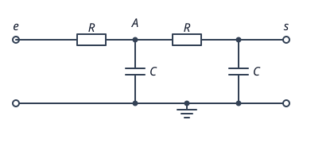
1) (2 pts) Sans calcul, quel est le comportement du montage à très basse et à très haute fréquence ? En déduire sa nature.
✅ Correction Q1
BF (\(\omega\to0\)) : \(Z_C=\dfrac1{jC\omega}\to\infty\), chaque condensateur est équivalent à un interrupteur ouvert. Sortie ouverte ⇒ aucun courant dans les résistances, donc pas de chute de tension : \(s=e\), soit \(\underline H\to1\).
HF (\(\omega\to\infty\)) : \(Z_C\to0\), le condensateur de sortie est équivalent à un fil qui relie \(s\) à la masse : \(s=0\), soit \(\underline H\to0\).
2) (4 pts) Établir l'expression de \(\underline H(j\omega)\) en fonction de \(x\).
✅ Correction Q2
Cadre
Régime sinusoïdal forcé, notations complexes. On note \(\underline a\) le potentiel du nœud A (entre les deux résistances), la masse étant à 0 V. Posons \(x=RC\omega\) (on a bien \(x=\omega/\omega_0\)).
Étape 1 — dernière cellule (sortie ouverte ⇒ pont diviseur)
\[ \underline s=\frac{\dfrac1{jC\omega}}{R+\dfrac1{jC\omega}}\,\underline a=\frac{\underline a}{1+jRC\omega}=\frac{\underline a}{1+jx} \]Étape 2 — loi des nœuds en A (courants sortants = courant entrant)
\[ \frac{\underline e-\underline a}{R}=jC\omega\,\underline a+\frac{\underline a-\underline s}{R} \]On multiplie par \(R\) : \(\underline e-\underline a=jx\,\underline a+(\underline a-\underline s)\).
Avec \(\underline a-\underline s=\underline a-\dfrac{\underline a}{1+jx}=\underline a\,\dfrac{jx}{1+jx}\) :
\[ \underline e=\underline a\left[1+jx+\frac{jx}{1+jx}\right]=\underline a\,\frac{(1+jx)^2+jx}{1+jx}=\underline a\,\frac{1-x^2+3jx}{1+jx} \]Étape 3 — \(\underline s\) en fonction de \(\underline e\)
\[ \underline H=\frac{\underline s}{\underline e}=\frac{\underline a}{1+jx}\cdot\frac{1+jx}{\underline a\,(1-x^2+3jx)}\ \Longrightarrow\ \boxed{\ \underline H=\frac{1}{1-x^2+3jx}\ } \]3) (2 pts) Mettre \(\underline H\) sous la forme canonique \(\dfrac{H_0}{1-x^2+j\,x/Q}\) et identifier \(H_0\), \(\omega_0\) et \(Q\). Quelle est la nature du régime libre ?
✅ Correction Q3
Par identification avec \(\underline H=\dfrac{1}{1-x^2+3jx}\) :
\(Q=\tfrac13<\tfrac12\) : le discriminant du dénominateur est positif (\(\Delta=9-4=5>0\)) ⇒ régime apériodique, pas de résonance (voir Q5).
4) (4 pts) Donner les équivalents de \(\underline H\) en BF et en HF, calculer \(\underline H(x=1)\), puis tracer les diagrammes de Bode asymptotiques et réels (gain et phase).
✅ Correction Q4
| \(x\ll1\) (BF) | \(x=1\) | \(x\gg1\) (HF) | |
|---|---|---|---|
| \(\underline H\) | \(\approx1\) | \(\dfrac1{3j}=-\dfrac j3\) | \(\approx-\dfrac1{x^2}\) |
| \(G_{dB}\) | \(0\) | \(-20\log3=-9{,}5\ \text{dB}\) | \(-40\log x\) (pente \(-40\) dB/déc) |
| \(\varphi\) | \(0\) | \(-90^\circ\) | \(-180^\circ\) |
Les asymptotes se coupent en \(x=1\) à 0 dB ; la courbe réelle passe 9,5 dB en dessous (pas de bosse). La phase passe continûment de \(0\) à \(-180^\circ\), avec \(-90^\circ\) en \(x=1\).
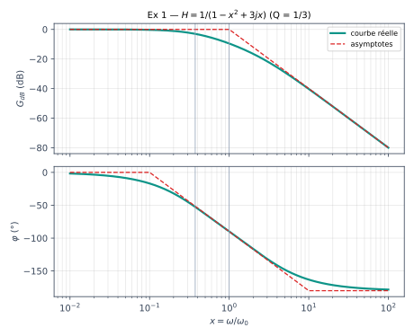
5) (3 pts) Déterminer l'équation différentielle liant \(s(t)\) et \(e(t)\). Calculer les racines de l'équation caractéristique et les constantes de temps. Le système est-il stable ?
✅ Correction Q5
On part de \(\underline s\,(1-x^2+3jx)=\underline e\) avec \(jx=jRC\omega\leftrightarrow RC\,\dfrac{d}{dt}\) et \(-x^2=(jx)^2\leftrightarrow(RC)^2\dfrac{d^2}{dt^2}\) :
\[ \boxed{(RC)^2\,\ddot s+3RC\,\dot s+s=e} \]Équation caractéristique : \((RC)^2r^2+3RC\,r+1=0\), \(\Delta=9(RC)^2-4(RC)^2=5(RC)^2>0\) :
\[ r_{1,2}=\frac{-3\pm\sqrt5}{2RC}\ \Rightarrow\ r_1=-\frac{0{,}382}{RC}=-3{,}82\times10^{3}\ \text{s}^{-1},\quad r_2=-\frac{2{,}618}{RC}=-2{,}62\times10^{4}\ \text{s}^{-1} \]avec \(RC=1{,}0\times10^3\times100\times10^{-9}=100\ \mu\text{s}\). Constantes de temps : \(\tau_1=262\ \mu\text{s}\), \(\tau_2=38{,}2\ \mu\text{s}\).
6) (3 pts) Calculer la fréquence de coupure à −3 dB \(f_c\) (valeur exacte puis numérique). La comparer à celle d'un unique filtre RC de même \(R\) et \(C\).
✅ Correction Q6
Définition : \(|\underline H(x_c)|=\dfrac{H_{max}}{\sqrt2}=\dfrac1{\sqrt2}\) ⇒ \((1-x_c^2)^2+9x_c^2=2\).
On développe : \(1-2x_c^2+x_c^4+9x_c^2=2\), soit \(x_c^4+7x_c^2-1=0\). Avec \(X=x_c^2>0\) :
\[ X=\frac{-7+\sqrt{49+4}}{2}=\frac{-7+\sqrt{53}}2=0{,}140\ \Rightarrow\ x_c=0{,}374 \]Un RC simple aurait \(f_c=f_0=1{,}59\ \text{kHz}\) : la bande passante est ici 2,7 fois plus étroite, bien plus que pour deux RC isolés (\(x_c=0{,}644\), soit 1,02 kHz) : c'est l'effet de charge de la question 2. En contrepartie la coupure est plus raide (−40 dB/déc).
7) (2 pts) On branche une résistance \(R_u\) entre \(s\) et la masse. La fonction de transfert reste-t-elle la même ? Quel montage à ALI intercaler pour que le filtre ne dépende plus de la charge ? Justifier.
✅ Correction Q7
Non : \(R_u\) se retrouve en parallèle avec le condensateur de sortie, ce qui modifie l'impédance vue par la dernière cellule et donc \(\underline H\) (la fonction établie en Q2 vaut « en sortie ouverte »).
Le suiveur fonctionne en régime linéaire car la rétroaction se fait sur la borne \(-\) (voir Ex 4).
Exercice 2 — Créneau filtré par un RC (Ch2) · 20 pts
Un signal créneau symétrique \(e(t)\), alternant entre \(+E_0\) et \(-E_0\) avec \(E_0=5{,}0\ \text{V}\) et de fréquence \(f=10\ \text{kHz}\), attaque le filtre RC du schéma (\(R=1{,}0\ \text{k}\Omega\), \(C=159\ \text{nF}\)), sortie ouverte.
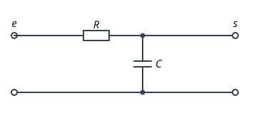
1) (3 pts) Déterminer \(\underline H(j\omega)\), sa fréquence de coupure \(f_c\), l'expression du gain \(G(f)\) et du déphasage \(\varphi(f)\).
✅ Correction Q1
Pont diviseur de tension (sortie ouverte) :
\[ \underline H=\frac{1/(jC\omega)}{R+1/(jC\omega)}=\frac1{1+jRC\omega}=\frac1{1+j\,f/f_c},\qquad f_c=\frac1{2\pi RC} \]\(RC=1{,}0\times10^3\times159\times10^{-9}=159\ \mu\text{s}\), donc \(f_c=\dfrac1{2\pi\times159\times10^{-6}}=1{,}00\ \text{kHz}\).
2) (4 pts) Quelle est la valeur moyenne de \(e\) ? Quelles fréquences le spectre de \(e\) contient-il ? On admet que l'amplitude de l'harmonique de rang \(k\) vaut \(E_k=\dfrac{4E_0}{k\pi}\) pour \(k\) impair. Calculer \(E_1,E_3,E_5,E_7\) et écrire \(e(t)\).
✅ Correction Q2
Valeur moyenne : le créneau passe autant de temps à \(+E_0\) qu'à \(-E_0\) ⇒ \(\langle e\rangle=0\).
Fréquences : un signal périodique de période \(T=1/f=100\ \mu\text{s}\) contient le fondamental \(f_1=f=10\ \text{kHz}\) et ses harmoniques \(f_k=kf\). Ici le signal est impair (seulement des sinus) et \(e(t+T/2)=-e(t)\) ⇒ seuls les rangs impairs existent : \(10,\ 30,\ 50,\ 70\ \text{kHz}\dots\)
| \(k\) | 1 | 3 | 5 | 7 |
|---|---|---|---|---|
| \(f_k\) | 10 kHz | 30 kHz | 50 kHz | 70 kHz |
| \(E_k=\dfrac{20}{k\pi}\) | 6,37 V | 2,12 V | 1,27 V | 0,909 V |
Les amplitudes décroissent en \(1/k\).
3) (4 pts) Pour chaque harmonique \(k=1,3,5,7\), calculer le gain \(G_k\) et le déphasage \(\varphi_k\) du filtre, puis l'amplitude \(S_k\) du signal de sortie.
✅ Correction Q3
Principe de superposition (système linéaire) : chaque harmonique est traité séparément avec \(f_k/f_c=10k\), puis \(S_k=G_kE_k\).
| \(k\) | \(f_k/f_c\) | \(G_k=1/\sqrt{1+(f_k/f_c)^2}\) | \(\varphi_k\) | \(S_k=G_kE_k\) |
|---|---|---|---|---|
| 1 | 10 | 0,0995 | −84,3° | 0,634 V |
| 3 | 30 | 0,0333 | −88,1° | 0,0707 V |
| 5 | 50 | 0,0200 | −88,9° | 0,0255 V |
| 7 | 70 | 0,0143 | −89,2° | 0,0130 V |
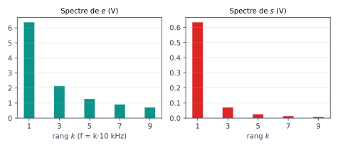
4) (4 pts) Écrire \(s(t)\) (3 premiers termes). Comparer \(S_3/S_1\) à \(E_3/E_1\). Quelle est la forme de \(s(t)\) ?
✅ Correction Q4
Rapports : \(E_3/E_1=\tfrac13=0{,}33\) alors que \(S_3/S_1=\dfrac{0{,}0707}{0{,}634}=0{,}112\approx\dfrac19\). Les harmoniques de sortie décroissent donc en \(\mathbf{1/k^2}\) (au lieu de \(1/k\) en entrée), et tous sont déphasés de \(\approx-90^\circ\) : c'est la signature d'un signal triangulaire (la série de Fourier d'un triangle décroît en \(1/k^2\)).
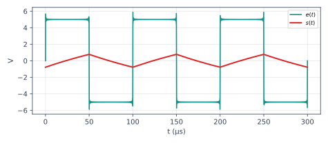
5) (3 pts) Montrer qu'à ces fréquences (\(f\gg f_c\)) le montage se comporte en intégrateur. En déduire l'amplitude crête du signal triangulaire obtenu et vérifier la cohérence avec \(S_1\).
✅ Correction Q5
Si \(f\gg f_c\) : \(\underline H=\dfrac1{1+jRC\omega}\approx\dfrac1{jRC\omega}\), donc \(j\omega\,\underline s=\underline e/(RC)\), soit en temporel :
\[ s(t)\approx\frac1{RC}\int e(t)\,dt\quad(\text{à une constante près, nulle car }\langle s\rangle=0). \]Sur une demi-période \(T/2=50\ \mu\text{s}\), \(e=\pm E_0\) est constant : \(s\) varie linéairement de \(\Delta s=\dfrac{E_0\,T/2}{RC}=\dfrac{5\times50\times10^{-6}}{159\times10^{-6}}=1{,}57\ \text{V}\) crête-à-crête.
Cohérence : un triangle d'amplitude crête \(s_{max}\) a un fondamental de \(\dfrac8{\pi^2}s_{max}=0{,}81\times0{,}79=0{,}64\ \text{V}\), proche de \(S_1=0{,}634\ \text{V}\). ✔
6) (2 pts) Que faut-il pour que \(s(t)\) reproduise correctement le créneau \(e(t)\) ? Donner un ordre de grandeur de \(f\) pour ce même filtre.
✅ Correction Q6
Il faut que le filtre laisse passer les harmoniques significatifs : \(f_c\gg k_{max}f\) avec \(k_{max}\approx10\) (les fronts raides contiennent beaucoup d'harmoniques élevés). Ici \(f_c=1\ \text{kHz}\) impose :
À 10 kHz, au contraire, \(T/2=50\ \mu\text{s}\ll\tau\) : on observe un triangle, pas un créneau.
Exercice 3 — Passe-bande, spectre & stabilité (Ch2) · 20 pts
Un signal rectangulaire \(e(t)\) vaut \(V_0=4{,}0\ \text{V}\) pendant la première moitié de chaque période et \(0\) pendant la seconde, avec \(f=1{,}0\ \text{kHz}\). On rappelle sa décomposition en série de Fourier : \[ e(t)=\frac{V_0}{2}+\frac{2V_0}{\pi}\sum_{k\ \text{impair}}\frac{\sin(k\omega t)}{k},\qquad \omega=2\pi f. \] On l'envoie sur un filtre passe-bande de fonction de transfert \(\underline H=\dfrac{H_0}{1+jQ\left(x-\dfrac1x\right)}\) avec \(x=f/f_0\), \(H_0=1\), \(Q=10\) et \(f_0=3{,}0\ \text{kHz}\). Le filtre est un circuit \(R,L,C\) série, la sortie étant prise aux bornes de \(R\).
1) (3 pts) Quelles sont la valeur moyenne et les fréquences présentes dans \(e\) ? Calculer les amplitudes \(E_1,E_3,E_5,E_7\) et tracer le spectre.
✅ Correction Q1
Valeur moyenne : \(\langle e\rangle=\dfrac{V_0}{2}=2{,}0\ \text{V}\) (composante continue, à \(f=0\)).
Fréquences : fondamental \(f_1=1\ \text{kHz}\), puis seulement les harmoniques impairs \(3,\ 5,\ 7,\dots\ \text{kHz}\) (le signal moins sa moyenne vérifie \(e(t+T/2)=-e(t)\)).
| \(k\) | 1 | 3 | 5 | 7 |
|---|---|---|---|---|
| \(f_k\) | 1 kHz | 3 kHz | 5 kHz | 7 kHz |
| \(E_k=\dfrac{2V_0}{k\pi}=\dfrac{8}{k\pi}\) | 2,55 V | 0,849 V | 0,509 V | 0,364 V |
Le spectre d'amplitude (figure de la question 2, à gauche) comporte une raie en 0 de 2 V puis des raies décroissantes en \(1/k\).
2) (4 pts) Calculer le gain \(G\) et le déphasage \(\varphi\) du filtre pour \(f=0\) et pour \(f_k=1,3,5,7\ \text{kHz}\), puis les amplitudes \(S_k\) en sortie.
✅ Correction Q2
Formules : \(G=\dfrac1{\sqrt{1+Q^2(x-1/x)^2}}\), \(\varphi=-\arctan\!\big[Q(x-1/x)\big]\), avec \(x=f_k/f_0\).
\(f=0\) : \(x\to0\), \(Q(x-1/x)\to-\infty\) donc \(\underline H\to0\) : la composante continue est supprimée (\(\langle s\rangle=0\)).
| \(k\) | \(x=f_k/f_0\) | \(x-1/x\) | \(G\) | \(\varphi\) | \(S_k=GE_k\) |
|---|---|---|---|---|---|
| 1 | 0,333 | −2,667 | 0,0375 | +87,9° | 0,095 V |
| 3 | 1 | 0 | 1 | 0° | 0,849 V |
| 5 | 1,667 | +1,067 | 0,0933 | −84,6° | 0,0475 V |
| 7 | 2,333 | +1,905 | 0,0524 | −87,0° | 0,0191 V |
Seul l'harmonique de rang 3 (\(f_3=f_0\)) passe intégralement ; tous les autres sont fortement atténués.
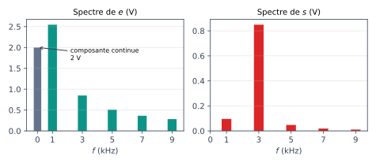
3) (3 pts) Écrire \(s(t)\) en gardant les deux termes dominants. Pourquoi la sortie est-elle quasi sinusoïdale ? Évaluer le taux de distorsion \(\tau_d=\dfrac{\sqrt{\sum_{k\ne3}S_k^2}}{S_3}\) (avec \(k\) jusqu'à 9).
✅ Correction Q3
Par superposition, \(s\) est la somme des harmoniques pondérés par le gain à leur fréquence. Comme le filtre est sélectif (\(Q=10\), bande passante \(\Delta f=f_0/Q=300\ \text{Hz}\)), il ne laisse passer que le voisinage de \(f_0=3\ \text{kHz}\), c'est-à-dire l'harmonique 3 : la sortie est quasi sinusoïdale à \(3f=3\ \text{kHz}\), même si l'entrée est rectangulaire.
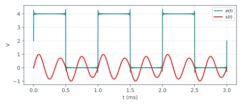
4) (3 pts) Pour le même \(e(t)\), on observe en sortie de quatre filtres \(F_a\) à \(F_d\) les signaux décrits ci-dessous. Identifier le type de chaque filtre (passe-bas, passe-haut, passe-bande étroit, coupe-bande) et justifier à l'aide du spectre de \(e\).
(a) Signal avec composante continue de 2 V, fronts arrondis, plus aucun détail rapide.
(b) Pas de composante continue ; des pointes brèves aux instants des fronts, puis retour vers 0 entre deux fronts.
(c) Signal sinusoïdal à 3 kHz de faible amplitude, sans composante continue.
(d) Composante continue de 2 V conservée, fronts raides conservés, mais l'oscillation fondamentale à 1 kHz est supprimée.
✅ Correction Q4
| Signal | BF (composante continue) | Fondamental | HF (fronts) | Filtre |
|---|---|---|---|---|
| (a) | transmise (2 V) | transmis | supprimés (arrondi) | passe-bas |
| (b) | supprimée | supprimé | transmis (pointes) | passe-haut |
| (c) | supprimée | un seul harmonique (rang 3) | supprimés | passe-bande étroit (sélectif) centré sur 3 kHz |
| (d) | transmise | supprimé | transmis | coupe-bande centré sur 1 kHz |
Règle : les discontinuités (fronts raides) sont portées par les hautes fréquences ; la composante continue par \(f=0\). Un filtre qui bloque \(f=0\) mais garde les fronts est un passe-haut ; un passe-bas fait l'inverse.
5) (4 pts) Le filtre est un RLC série (sortie sur \(R\)) avec \(L=10\ \text{mH}\). Déterminer \(C\) et \(R\) pour que \(f_0=3{,}0\ \text{kHz}\) et \(Q=10\). Établir l'équation différentielle de \(s(t)\) et conclure sur la stabilité.
✅ Correction Q5
Pour un RLC série (sortie sur \(R\)) : \(\omega_0=\dfrac1{\sqrt{LC}}\) et \(Q=\dfrac1R\sqrt{\dfrac LC}\).
\(C=\dfrac1{L\omega_0^2}=\dfrac1{10^{-2}\times(2\pi\times3000)^2}=281\ \text{nF}\) ; \(R=\dfrac1Q\sqrt{\dfrac LC}=\dfrac1{10}\sqrt{\dfrac{10^{-2}}{2{,}81\times10^{-7}}}=18{,}8\ \Omega\).
Équation différentielle (loi des mailles \(e=u_R+u_L+u_C\), \(i=u_R/R\), \(s=u_R\)) :
\[ e=s+\frac LR\dot s+\frac1{RC}\!\int s\,dt\ \Rightarrow\ \boxed{LC\,\ddot s+RC\,\dot s+s=RC\,\dot e} \]Coefficients : \(LC>0\), \(RC>0\), \(1>0\) — tous de même signe. Équation caractéristique \(LCr^2+RCr+1=0\), de partie réelle \(-\dfrac R{2L}=-942\ \text{s}^{-1}<0\).
6) (3 pts) Quelle est la durée du régime transitoire ? Combien de périodes d'entrée faut-il attendre avant d'observer le régime permanent ?
✅ Correction Q6
L'amplitude libre décroît en \(e^{-t/\tau}\) avec \(\tau=\dfrac{2L}{R}=\dfrac{Q}{\pi f_0}=\dfrac{10}{\pi\times3000}=1{,}06\ \text{ms}\).
Un filtre très sélectif (\(Q\) grand) a un transitoire long : le compromis sélectivité/rapidité est général (\(\tau\propto Q/f_0\)).
Exercice 4 — ALI réel & stabilité (Ch2 · Ch3) · 20 pts
On considère le montage ci-dessous avec \(R_1=1{,}0\ \text{k}\Omega\), \(R_2=9{,}0\ \text{k}\Omega\). On note \(\beta=\dfrac{R_1}{R_1+R_2}\). L'ALI est d'abord supposé idéal (Q1-Q2).
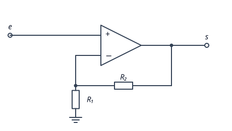
1) (2 pts) Pourquoi peut-on supposer que l'ALI fonctionne en régime linéaire ? Que valent alors \(\varepsilon=v_+-v_-\) et les courants d'entrée ?
✅ Correction Q1
La sortie est reliée à l'entrée inverseuse \(v_-\) par \(R_2\) : il y a une rétroaction négative. Si \(v_-\) augmente, \(s\) diminue (et inversement), ce qui stabilise le montage : le régime linéaire est possible (et stable, voir Q5).
2) (2 pts) Établir \(s\) en fonction de \(e\). Montage inverseur ou non inverseur ? Gain en dB ?
✅ Correction Q2
\(v_+=e\) (pas de courant dans la liaison). \(R_1\) et \(R_2\) forment un diviseur de tension (\(i_-=0\)) : \(v_-=\dfrac{R_1}{R_1+R_2}s=\beta s\). Avec \(v_+=v_-\) :
\[ e=\beta s\ \Rightarrow\ \boxed{s=\left(1+\frac{R_2}{R_1}\right)e=10\,e} \]Gain \(+10>0\) : non inverseur (\(s\) en phase avec \(e\)). \(G_{dB}=20\log10=20\ \text{dB}\). Impédance d'entrée infinie.
3) (4 pts) L'ALI réel a un gain différentiel de type passe-bas du 1er ordre : \(\underline\mu=\dfrac{\mu_0}{1+j\omega/\omega_a}\), \(\mu_0=2\times10^5\), avec un produit gain-bande \(\mu_0f_a=1\ \text{MHz}\). Établir la fonction de transfert \(\underline H=\underline s/\underline e\) du montage et la mettre sous la forme \(\dfrac{H_0}{1+j\omega/\omega_c}\). Exprimer \(H_0\) et \(\omega_c\).
✅ Correction Q3
Le modèle de l'ALI réel : \(\underline s=\underline\mu\,(\underline v_+-\underline v_-)=\underline\mu\,(\underline e-\beta\underline s)\). Donc :
\[ \underline s\,(1+\beta\underline\mu)=\underline\mu\,\underline e\ \Rightarrow\ \underline H=\frac{\underline\mu}{1+\beta\underline\mu} \]On remplace \(\underline\mu\) et on multiplie numérateur et dénominateur par \(1+j\omega/\omega_a\) :
\[ \underline H=\frac{\mu_0}{1+\dfrac{j\omega}{\omega_a}+\beta\mu_0}=\frac{\dfrac{\mu_0}{1+\beta\mu_0}}{1+\dfrac{j\omega}{\omega_a(1+\beta\mu_0)}} \]Le montage est un passe-bas du premier ordre, dont la bande passante est élargie d'un facteur \(1+\beta\mu_0\) par la contre-réaction.
4) (3 pts) Application numérique : \(f_a\), \(H_0\), \(f_c\). Que vaut le produit \(H_0f_c\) ? Peut-on amplifier un signal de 500 kHz avec ce montage et un gain de 10 ?
✅ Correction Q4
\(f_a=\dfrac{1\ \text{MHz}}{\mu_0}=\dfrac{10^6}{2\times10^5}=5\ \text{Hz}\) ; \(\beta=0{,}1\) donc \(\beta\mu_0=2\times10^4\) et \(1+\beta\mu_0=20\,001\).
Le produit \(H_0f_c\) est égal au produit gain-bande de l'ALI : on échange gain contre bande passante. À 500 kHz (\(\gg f_c\)), le gain réel est \(\approx10/\sqrt{1+25}\approx2\) : non, il faudrait un gain \(\le\) environ 2 (soit \(\beta\approx0{,}5\)) pour amplifier correctement à 500 kHz.
5) (3 pts) Écrire l'équation différentielle de \(s(t)\) et conclure sur la stabilité du montage de la figure.
✅ Correction Q5
De \(\underline H=\dfrac{H_0}{1+j\omega/\omega_c}\) on tire (\(j\omega\leftrightarrow d/dt\)) :
\[ \boxed{\frac1{\omega_c}\frac{ds}{dt}+s=H_0\,e} \qquad\text{avec}\ \frac1{\omega_c}=1{,}59\ \mu\text{s} \]Équation caractéristique : \(\dfrac r{\omega_c}+1=0\Rightarrow r=-\omega_c=-6{,}28\times10^5\ \text{s}^{-1}<0\).
6) (4 pts) On permute les deux entrées de l'ALI (voir schéma) : \(e\) est maintenant sur \(v_-\) et la sortie ramenée sur \(v_+\) par le même diviseur. Établir \(\underline H\) puis l'équation différentielle de \(s(t)\) (avec \(\underline\mu\) réel) et étudier sa stabilité.
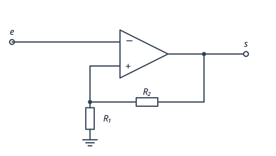
✅ Correction Q6
Maintenant \(v_+=\beta s\) et \(v_-=e\) : \(\underline s=\underline\mu\,(\beta\underline s-\underline e)\), d'où \(\underline s\,(1-\beta\underline\mu)=-\underline\mu\,\underline e\) :
\[ \underline H=\frac{-\mu_0}{1-\beta\mu_0+\dfrac{j\omega}{\omega_a}} \]Équation différentielle :
\[ \boxed{\frac1{\omega_a}\frac{ds}{dt}+(1-\beta\mu_0)\,s=-\mu_0\,e}\quad\text{avec}\ 1-\beta\mu_0=-19\,999<0 \]Racine : \(r=+\omega_a(\beta\mu_0-1)=2\pi\times5\times19\,999=+6{,}28\times10^5\ \text{s}^{-1}>0\).
7) (2 pts) Que devient la sortie du montage permuté ? L'hypothèse \(\varepsilon=0\) est-elle valable ? Quelle règle en déduire ?
✅ Correction Q7
La divergence exponentielle fait croître \(|s|\) en quelques microsecondes jusqu'à la saturation \(s=\pm V_{sat}=\pm15\ \text{V}\) : l'ALI quitte le régime linéaire et le montage est en régime saturé (c'est un comparateur à hystérésis, voir Ch4). L'hypothèse \(v_+=v_-\) est alors fausse : \(\varepsilon\) est grand, pas nul.
Exercice 5 — Filtre actif passe-haut (Ch1 · Ch3) · 20 pts
L'ALI du montage est idéal. \(R_1=1{,}0\ \text{k}\Omega\), \(R_2=10\ \text{k}\Omega\), \(C=100\ \text{nF}\). On note \(Z_1\) l'impédance de la branche d'entrée (\(C\) en série avec \(R_1\)).
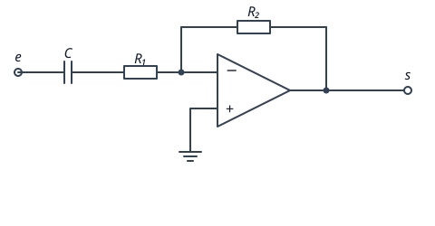
1) (2 pts) Justifier le régime linéaire et écrire les hypothèses utilisées.
✅ Correction Q1
\(R_2\) relie la sortie à l'entrée inverseuse : rétroaction négative ⇒ stable, régime linéaire possible. Hypothèses de l'ALI idéal en régime linéaire : \(i_+=i_-=0\) et \(\varepsilon=0\). Ici \(v_+=0\) (masse), donc \(v_-=0\) : l'entrée \(-\) est une masse virtuelle.
2) (4 pts) Établir \(\underline H(j\omega)\).
✅ Correction Q2
Loi des nœuds en \(v_-\) (potentiel nul, \(i_-=0\)) : le courant qui traverse \(Z_1\) est \(\dfrac{\underline e-0}{Z_1}\) et il traverse ensuite \(R_2\) :
\[ \frac{\underline e-0}{Z_1}+\frac{\underline s-0}{R_2}=0\ \Rightarrow\ \underline H=-\frac{R_2}{Z_1} \]Avec \(Z_1=R_1+\dfrac1{jC\omega}=\dfrac{1+jR_1C\omega}{jC\omega}\) :
\[ \boxed{\underline H=-\frac{jR_2C\omega}{1+jR_1C\omega}} \]3) (3 pts) Mettre \(\underline H\) sous la forme \(H_\infty\dfrac{jx}{1+jx}\). Identifier \(H_\infty\), \(\omega_1\), \(f_1\) et la nature du filtre.
✅ Correction Q3
On pose \(x=\omega/\omega_1\) avec \(\omega_1=1/(R_1C)\) : \(R_2C\omega=\dfrac{R_2}{R_1}\,x\), donc
\[ \underline H=-\frac{R_2}{R_1}\,\frac{jx}{1+jx} \]Vérification qualitative : à très haute fréquence \(Z_C\to0\), \(Z_1\to R_1\) et on retrouve l'inverseur \(-R_2/R_1\) ; à très basse fréquence \(Z_C\to\infty\) donc \(\underline H\to0\) ✔.
4) (4 pts) Tracer les diagrammes de Bode asymptotiques et réels, en calculant \(\underline H(x=1)\).
✅ Correction Q4
| \(x\ll1\) | \(x=1\) | \(x\gg1\) | |
|---|---|---|---|
| \(\underline H\) | \(\approx-10\,jx\) | \(-\dfrac{10j}{1+j}=-5(1+j)\) | \(\approx-10\) |
| \(G_{dB}\) | \(20+20\log x\) (pente +20 dB/déc) | \(20\log7{,}07=17\ \text{dB}\) | \(20\ \text{dB}\) |
| \(\varphi\) | \(-90^\circ\) | \(-135^\circ\) | \(-180^\circ\) |
Phase : \(-10\,jx=10x\,e^{-j\pi/2}\) en BF (le signe « − » vaut \(e^{\pm j\pi}\) et \(\arg(jx)=+90^\circ\), d'où \(-180^\circ+90^\circ=-90^\circ\)) ; en \(x=1\) : \(-5-5j\) est dans le 3ᵉ quadrant, \(\varphi=-135^\circ\) ; HF : \(-10\) donc \(-180^\circ\) (continuité avec la BF).
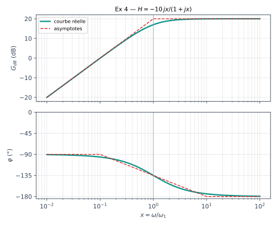
5) (3 pts) Montrer qu'à basse fréquence (\(f\ll f_1\)) le montage est un dérivateur. Donner la relation temporelle et le domaine de validité numérique.
✅ Correction Q5
Pour \(x\ll1\) : \(\underline H\approx-jR_2C\omega\Rightarrow\underline s=-R_2C\,(j\omega\,\underline e)\), soit :
\[ s(t)\approx-R_2C\,\frac{de}{dt} \]\(R_2C=10^4\times10^{-7}=1{,}0\ \text{ms}\). Valable pour \(f\ll f_1\approx1{,}6\ \text{kHz}\) (en pratique \(f\lesssim160\ \text{Hz}\) pour 0,5 % d'erreur environ sur le gain). En HF le montage est un simple amplificateur inverseur de gain \(-10\) : il ne dérive plus.
6) (4 pts) On applique \(e(t)=1\ \text{V}+0{,}2\cos(2\pi f_1t)\ \text{V}\) à la fréquence \(f_1=1{,}59\ \text{kHz}\). Donner \(s(t)\). Quelle amplitude maximale de sinusoïde HF peut-on appliquer sans saturer ?
✅ Correction Q6
Le signal est la somme d'une composante continue (\(\omega=0\)) et d'une sinusoïde : par superposition, on traite chacune avec son propre \(\underline H\).
Continu : \(\underline H(0)=0\) ⇒ la composante continue de 1 V est bloquée (comme le fait tout passe-haut : le condensateur est chargé et ne laisse plus passer le courant continu).
Sinusoïde en \(x=1\) : \(|\underline H|=\dfrac{10}{\sqrt2}=7{,}07\), \(\varphi=-135^\circ=-\dfrac{3\pi}4\) (voir Q4), donc l'amplitude de sortie est \(7{,}07\times0{,}2=1{,}41\ \text{V}\) :
Saturation : en HF le gain vaut \(|H_\infty|=10\), il faut \(10\,E_m\le V_{sat}=15\ \text{V}\) soit \(E_m\le\boxed{1{,}5\ \text{V}}\). Au-delà, la sortie est écrêtée et le régime n'est plus linéaire.
📂 Documents — ressources en ligne (PDF)
PDF d'enseignants de classes préparatoires, téléchargés depuis leurs sites (liens vers la source ci-dessous). Niveau très proche du cours de D. Courtois, mais vocabulaire et notations peuvent différer.
Étienne Thibierge (Lycée Blaise Pascal, PT) — cours & TD corrigés
Autres exercices (prépas)
Sources : etienne-thibierge.fr · cpge-paradise.com · ribiere.regit.org · cpge-brizeux.fr. Pas de DS ECAM publiés en ligne à ma connaissance : les vrais DS sont ceux de Moodle (DS0, tests de 20 min).